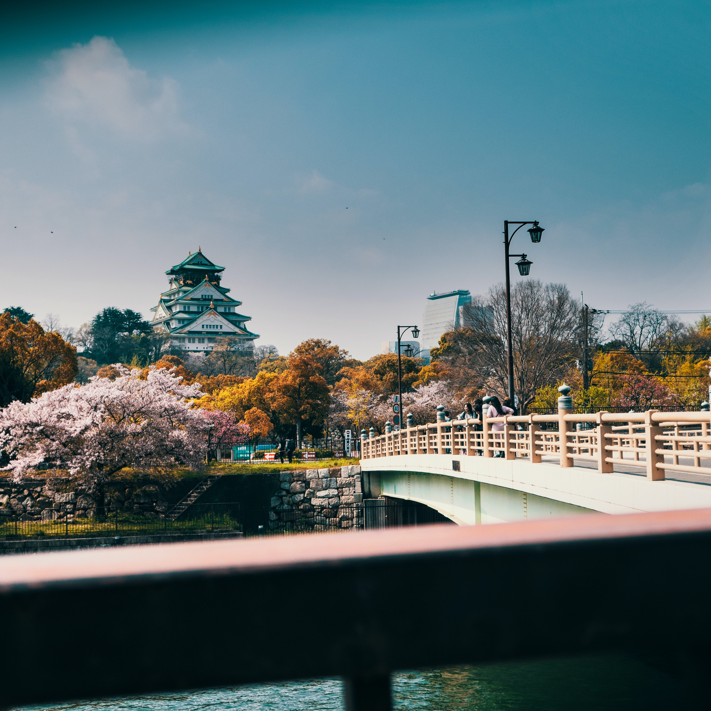

Osaka Tourism
| Climate | Services | About Us | Contact Us |
|---|
Welcome to Osaka Tourism's official website we provide best in class services at very reasonable prices
A little bit about our beautiful city Osaka
.jpg) |  |
Osaka (大阪, Ōsaka) is Japan's second largest metropolitan area after Tokyo. It has been the economic powerhouse of the Kansai Region for many centuries. Osaka was formerly known as Naniwa. Before the Nara Period, when the capital used to be moved with the reign of each new emperor, Naniwa was once Japan's capital city, the first one ever known.Osaka is a major financial center of Japan, and it is recognized as one of the most multicultural and cosmopolitan cities in Japan. The city is home to the Osaka Exchange as well as the headquarters of multinational electronics corporations such as Panasonic and Sharp. Osaka is an international center of research and development and is represented by several major universities, notably Osaka University, Osaka Metropolitan University, and Kansai University. Famous landmarks in the city include Osaka Castle, Osaka Aquarium Kaiyukan, Dōtonbori, Tsūtenkaku in Shinsekai, Tennōji Park, Abeno Harukas, Sumiyoshi Taisha Grand Shrine, and Shitennō-ji, one of the oldest Buddhist temples in Japan.
Osaka's History
The first-ever sign of habitation or human life in the area around Osaka was found as the buried skeletons that are from far in the past dating to some 5th to 6th century. It was the Yayoi period when the city of Osaka when the increment in the population was observed. Not only that, the farming of rice grew, and port became one of the centers for trade. Due to the huge amount of tombs, the scientists and researchers mapped the conclusion that included the city as a center for political actions. The Naniwa Nagara-Toyosaki Palace was built in 645 by the emperor Kotoku by making Naniwa (present-day Osaka) the new capital of Japan. However, in a short span of time, another city was declared as the capital of Japan. Nonetheless, Naniwa sustained being a focus and bridge for trade with the nearby countries and prefectures.
In the year 1496, one of the Buddhist sects established its headquarters in one of the strong temples known as the Ishiyama Hongan-Ji. To drive the sect out of the temple, the government planned and set up a siege that lasted for around ten years that resulted in the destruction of the temple. Rather than rebuilding the Ishiyama Hongan-Ji temple, the very popular Osaka Castle was built in its place. All through time, Osaka grew out to become a center of economy and a well-known major city of Japan. Other than being a developing city in regards to trade and economy, it as well worked towards creating rich art culture by introducing the Kabuki theaters and ukiyo-e pictures. For example, in 1837, Oshio Heihachiro, a samurai, took over a revolt against the government that denied helping the poor families. It was massively supported by the locals. The rebellion was violently put down, and Oshio Heihachiro ended up suiciding.In 1888 later, Osaka opened its doors for trade and exchange purposes with the foreign that maximized the population along with the area.
The expansion of Osaka continued during the 19th century. Osaka has a promising situation due to which it observed the high number of Korean immigrants. The city consistently developed at a rapid pace making it through the most modern cities in Japan due to the strong politics that pulled the economy and industrialization in the right direction.During world war 2, Osaka had to undergo massive destruction as the American air raid hit the city multiple times, making sure to affect the urban areas.
Best places to visit in Osaka
Osaka Castle

Osaka Castle (Ōsaka-jō) was completed in 1586 and took just three years to build. Ordered built by famed Japanese warrior and politician Toyotomi Hideyoshi it was, at the time, the largest castle in Japan. Almost all Hideyoshi's military commanders were required to contribute stones for its construction, the largest being the Higo-ishi stone, near the south entrance. Standing nearly six meters high and 14.5 meters long, it was contributed to by the celebrated General Kato Kiyomasa from the island of Shodo.Click here to book a visit here or to include this place in our one day plan
Shitennō-ji Temple

Shitennō-ji is Osaka's best-known temple and can trace its roots back to AD 59. It was also Japan's first Buddhist temple. Although rebuilt numerous times through the centuries (the most recent reconstruction took place in the 1960s), this lovely temple remains the oldest such religious site to be officially administered.Highlights of a tour include the site's five-story pagoda, along with a number of other exquisitely decorated buildings. The best of these are the Golden Pavilion (Kondō) with its fine statues and paintings, the Lecture Hall (Kōdō), and a lovely covered corridor linking three of the site's gates. Click here to book a visit here or to include this place in our one day plan
Osaka Aquarium Kaiyukan

Looking a little as if it might be made of giant Lego blocks, the Osaka Aquarium Kaiyukan is well worth exploring. One of the world's biggest such attractions, this walk-through aquarium takes guests on a fascinating tour of a number of marine habitats. These include the Pacific Ocean and Antarctica, along with the Great Barrier Reef and Monterey Bay.A variety of Japanese marine life is also featured, including freshwater species, as well as native reptiles and mammals. All told, the site boasts 27 tanks, the biggest being nine meters deep and capable of easily accommodating large marine life including manta rays and sharks.Click here to book a visit here or to include this place in our one day plan
The Tempozan Ferris Wheel and Harbor Village

The Tempozan Ferris Wheel provides some of the best views over Osaka, particularly of the port area and the Tempozan Harbor Village where it's located. This massive Ferris wheel is one of the largest such attractions in Asia, standing more than 112 meters tall and with a diameter spanning 100 meters.In operation since 1997, this popular attraction offers a thrilling 17-minute journey that is especially enjoyable at night when the wheel is lit up in a variety of different colors dictated by the weather (orange when sunny weather is forecast, green for clouds, and blue for rain). Thrill seekers can opt for one of the special "see-through-bottom" cars for an incredible all-round view of Osaka Bay.Click here to book a visit here or to include this place in our one day plan
The Kobe Port Tower

Osaka boasts not just one but two tall towers that have become synonymous with the city. The newst of these, Kobe Port Tower, is located on the outskirts of the city near the main harbor. Despite being a little farther away from the city center, it's certainly a must-visit attraction that draws crowds of tourists.Opened in 1963 and constructed from red steel, this earthquake-proof structure stands 108 meters tall and has retained a look of modernity. The highlight of a visit is spending time on the observation deck, affording great views over the city and the Kobe Port area.Click here to book a visit here or to include this place in our one day plan